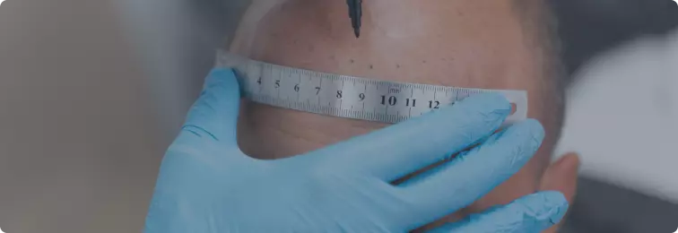
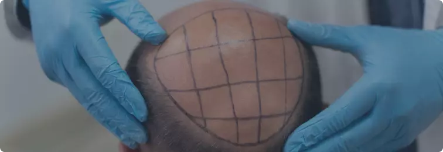

-
Алопеция – полное или частичное выпадение, или поредение волос, чаще на голове, реже на других
частях тела.
Важна именно диагностированная алопеция, а не временное выпадение волос. Постановка диагноза осуществляется врачом-трихологом.
-
Потеря волос из-за ожогов, отсутствие роста волос на месте шрамов (рубцов)
Пересадка собственных волос возможна, если их осталось достаточно для забора донорского материала.
- Пациентам, страдающие психическими расстройствами (например, при неконтролируемом желании вырывать у себя волосы, дисморфофобия — неприязненном отношении к своему телу, навязчивые идеи также являются противопоказанием к трансплантации волос).
- Абсолютные физиологические противопоказания к операциям - проблемы свертываемости крови, непереносимость анестезии, любые воспалительные заболевания кожи головы, иммунодефицитные состояния.
- Относительные противопоказания, при которых операция возможна по согласованию с лечащим врачом, — сахарный диабет, гипертоническая болезнь, сердечно-сосудистые и онкологические заболевания, дерматологические заболевания в стадии обострения. При наличии относительных противопоказаний, может быть ограничено количество пересаживаемых волосяных фолликулов.
-
Операционный стрип-метод (FUT — follicular unit transplantation) или метод взятия донорской полоски
-
Комбинированный метод (FUE — follicular unit extraction) – ФГ берутся разрезом, а трансплантируют операционным путём
- Полоска должна быть как можно длиннее и уже
- При закрытии раны натяжение краев должно быть минимальным
- Разрез делают как можно более ровным и ведут параллельно волосяным фолликулам
- Следует помнить, что при взятии полоски шириной более 1 см есть опасность формирования широких заметных рубцов
- При выполнении процедур, для которых донорская полоска должна быть широкой и содержащей более 2000 ФГ, предполагается образование широких рубцов
- С верхнего края донорского дефекта срезают 1–2 мм, применяя трихофитное закрытие раны
- Рану ушивают однослойным швом нейлоновой нитью 4/0. Шов снимают на 7–е сутки
- Между процедурами делают перерыв 6 месяцев
- Сначала производится забор донорских графтов панчем из зоны расположенной на затылке (место, где волосяные фолликулы не подвержены влиянию гормонов).
- На месте извлеченных графтов остаются незначительные отверстия в диаметре меньше 1мм, которые при заживлении оставляют маленькие незаметные белые точки. Период заживления после извлечения волосяных фолликулов составляет около недели.
- Далее идет подготовка графтов.
- После идет проверка количества, качества волос в одном графте и далее их помещают специальные ванночки с жидкостью, для того чтобы графты не повредились и не высохли.
- Подготовка зоны подсадки волос.
- В заранее размеченную зону проводятся микроразрезы специальной иглой.
- Далее каждый графт имплантируется в данные микроразрезы, вручную, специальными пинцетами.
Каналы для пересадки фолликулов выполняют специальным прибором – микроблейдом.
Выполняется прокол между уже существующими волосами под углом, который соответствует
углу роста волос. Насечек выполняется столько же, сколько графтов планируется пересадить (в
среднем, более 2000).
Пересадка выполняется вручную при помощи микропинцета. Пересаженные волосы удерживаются фибрином и не требуют дополнительной фиксации.
Рост волос отмечается на 2-3 месяц.
- Продолжающееся выпадение волос;
- Низкая линия роста волос;
- Неправильное расположение донорского рубца;
- Неправильное направление роста волос;
- Потеря чувствительности некоторых участков головы;
- Кровотечение во время и после пересадки волос;
- Повреждение волосяных фолликулов;
- Зуд кожи после операции;
- Отечность после трансплантации волос.
- Фолликулярная группа (ФГ) — естественный пучок волосяных фолликулов в коже волосистой части головы. Каждая группа состоит из 1-3 волос.
- Мультифолликулярная группа — трансплантат, образованный 2-3 фолликулярными группами и обычно состоящий из 3-7 волос. Не всегда разделен на ФГ.
- Микрографты — трансплантат, состоящий из одного волоса. Используются при восстановлении бровей, или при необходимости пересадить именно ФГ, состоящую из одного фолликула (например, на переднюю линию роста волос пациента, у которого мало своих одноволосяных ФГ).
- Семейство фолликулов состоит из 3–5 волос и образовано двумя смежными ФГ, расположенными ближе друг к другу, чем к остальным.
- Мини-графты — не разрезанные под микроскопом трансплантаты, состоящие из 4–8 волос и подходящие по форме и размеру для пересадки в щелевидные или небольшие округлые реципиентные участки («скроенный» по размеру).